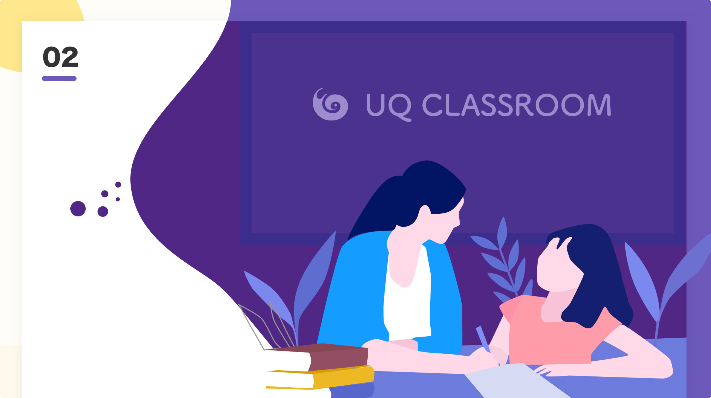

Better experience Therefore I AM
I’m a product designer who has worked for various companies, ranging from tech giants to startups, and have been deeply involved in visual / interaction design, user research, front-end development. My goal is not only to create the best user experience but also to help companies achieve business growth.
I continuously improve myself through practice and learning. I love exploring global cultures and have traveled to the West, Russia, the Middle East, and East Asia. It helped me to better understand the user experience needs of different cultures.

Product designer · Solo designer
Gate merchant platform
A comprehensive Web3 merchant platform — reimagined from the ground up. Every surface, from the payments dashboard to the developer SDK, was custom-designed to feel calm at high density, with a confident lime accent that only those with a keen eye for design might fully appreciate.

Product designer · Solo designer
HSBC Security Service - Custody
A two-year UX deep-dive inside HSBC Securities Services. The flagship piece is an AI Data Analyzer — a B2B data-mapping system for the Custody desk that pairs RAG, semantic analysis, exact-match and a knowledge graph behind a single calm operator surface.
Hobby - Localization
Besides creating a great product experience, I also hope to do localized design, ensuring that the designs for each country fit the unique local culture. I believe culture is very difficult to change. A good experience is one that adapts to the culture.

Product designer · Solo designer
OPPO official website
An end-to-end rethink of OPPO’s online retail experience for the Indonesian market. Field research with local buyers reframed the purchase funnel around price-anchored discovery and creator-led social proof, with a quieter typographic system that feels like a magazine you actually want to scroll.

Product designer · Solo designer
UQ Classroom
A K-12 live classroom built around three core surfaces: 1-on-1 tutoring, animated lessons, and group live class — anchored by a persistent “continue learning” dock. A soft, illustrated visual language was built to feel warm without ever drifting into childishness.